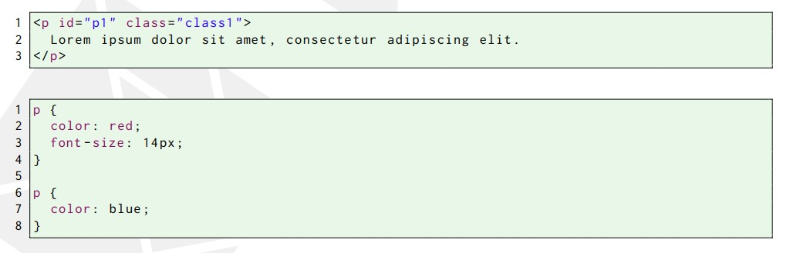
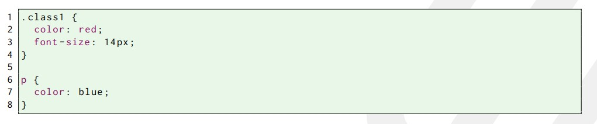
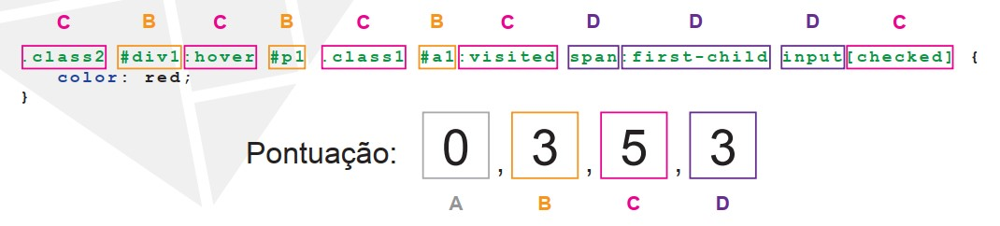
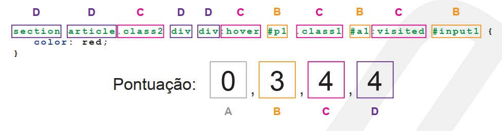

Seletores
Seletores Básicos
Como vimos, os seletores são utilizados para determinar quais
elementos HTML devem ser afetados por uma regra CSS. A linguagem
CSS oferece uma grande variedade de seletores.
| Seletor |
Padrão |
Exemplo |
Descrição |
| Universal |
* |
* |
Seleciona todos os elementos |
| Tipo |
e |
p |
Seleciona todos os elementos p |
| Classe |
.class |
.erro |
Seleciona todos os elementos da classe erro |
| ID |
#id |
#conteudo |
Seleciona o elemento de id conteudo |
| Descendente |
e1 e2 |
p a |
Seleciona todo elemento a descendente de um elemento p |
| Filho |
e1 > e2 |
p > a |
Seleciona todo elemento a filho de um elemento p |
| Irmão Adjacente |
e1 + e2 |
h1 + p |
Seleciona todo elemento p filho de um elemento h1 |
| Irmão |
e1 ~ e2 |
h1 ~ p |
Seleciona todo elemento p filho de um elemento h1 |
Seletores de Atributo
| Padrão |
Exemplo |
Descrição |
| [a] |
[min] |
Seleciona todos os elementos que tenham o atributo min definido |
| [a="v"] |
[min="10"] |
Seleciona todos os elementos que tenham o atributo min igual a 10 |
| [a="v"] |
[min="10"] |
Seleciona todos os elementos que tenham o atributo min igual a 10 |
| [a~="v"] |
[title="k19"] |
Seleciona todos os elementos que possuam a palavra k19 no valor do atributo title |
| [a^="v"] |
[href="https"] |
Seleciona todos os elementos que possuam a palavra href no valor do atributo https |
| [a$="v"] |
[href$=".css"] |
Seleciona todos os elementos que possuam a palavra href no valor do atributo .css |
| [a*="v"] |
[title*="k19"] |
Seleciona todos os elementos que possuam a palavra k19 no valor do atributo title |
| [a|="v"] |
[href|="https"] |
Seleciona todos os elementos que possuam a palavra href no valor do atributo https |
Pseudo-classes
| Padrão |
Exemplo |
Descrição |
| :root |
:root |
Seleciona o elemento raiz do documento |
| :nth-child(n) |
:nth-child(3) |
Seleciona todo terceiro elemento contido em algum outro elemento |
| :nth-last-child(n) |
:nth-last-child(3) |
Seleciona todo terceiro elemento de trás para frente contido em algum outro elemento |
| :nth-of-type(n) |
a:nth-of-type(3) |
Seleciona todo terceiro elemento a que é o terceiro elemento contido em algum outro elemento |
| :nth-last-of-type(n) |
a:nth-last-of-type(3) |
Seleciona todo elemento a que é o terceiro elemento de trás para frente contido em algum outro elemento |
| :first-child |
:first-child |
Seleciona todo primeiro elemento contido em algum outro elemento |
| :last-child |
:last-child |
Seleciona todo último elemento contido em algum outro elemento |
| :first-of-type |
a:first-of-type |
Seleciona todo elemento a que é o primeiro elemento contido em algum outro elemento |
| :last-of-type |
a:last-of-type |
Seleciona todo elemento a que é o último elemento contido em algum outro elemento |
| :only-child |
:only-child |
Seleciona todo elemento que é filho único |
| :only-of-type |
a:only-of-type |
Seleciona todo elemento que é o único filho do tipo a de algum outro elemento |
| :empty |
:empty |
Seleciona todo elemento que não tem conteúdo |
| :link |
a:link |
Seleciona todo link não visitado |
| :visited |
a:visited |
Seleciona todo link visitado |
| :active |
:active |
Seleciona todo link ativo |
| :hover |
a:hover |
Seleciona todo link sob o ponteiro do mouse |
| :focus |
input:focus |
SSeleciona o input que está no foco |
| :target |
:target |
Seleciona a âncora atual |
| :lang(lang) |
:lang(pt) |
Seleciona todos os elementos com a linguagem pt |
| :enabled |
input:enabled |
Seleciona todos os inputs habilitados |
| :disabled |
input:disabled |
Seleciona todos os inputs desabilitados |
| :checked |
input:checked |
Seleciona todos os inputs marcados |
| :not(s) |
:not(.erro) |
Seleciona todo elemento que não é da classe erro |
Pseudo-elementos
| Padrão |
Exemplo |
Descrição |
| :first-line |
p:first-line |
Seleciona a primeira linha de todo parágrafo |
| :first-letter |
p:first-letter |
Seleciona a primeira letra de todo parágrafo |
| :before |
p:before |
Utilizado para adicionar conteúdo antes dos parágrafos |
| :after |
p:after |
Utilizado para adicionar conteúdo depois dos parágrafos |
Prioridade dos Seletores
Eventualmente, um elemento HTML é afetado por duas ou mais regras
CSS. Além disso, uma determinada propriedade CSS pode ser definida
com valores diferentes em duas ou mais dessas regras.
Nesse caso, essa propriedade terá o valor definido na regra CSS de
maior prioridade. Essas prioridades são calculadas de acordo com
os seletores utilizados nas regras CSS e na ordem em que elas
foram definidas.
Considere o código HTML e o código CSS a seguir.

Perceba que todo elemento p é afetado pelas duas regras CSS acima.
Nessas duas regras, a propriedade color foi definida com valores
diferentes. Os seletores dessas duas regras possuem a mesma
importância. Nesse caso, a última regra tem maior prioridade.
Portanto, o texto do parágrafo será exibido em azul.
A propriedade font-size não entrou em conflito, pois foi definida
em apenas uma das regras CSS. Portanto, o tamanho da fonte do
texto do parágrafo será 14px.
Agora, suponha que o código CSS seja o seguinte:

Observe que o parágrafo do exemplo é afetado pelas duas regras CSS acima. Nesse caso, qual será
a cor do texto do parágrafo? A resposta correta é vermelho. Isso
ocorre, pois os seletores de classe possuem importância maior que
os seletores de tipo.
Conforme a complexidade dos seletores utilizados em nossas regras
CSS aumenta, a dificuldade em determinar qual deles possui maior
importância também aumenta. Por isso, devemos seguir o algoritmo
definido na especificação da linguagem CSS para determinar a
importância dos seletores. Nesse algoritmo, os seletores obterão
uma pontuação em quatro critérios diferentes.
- Caso as propriedades sejam definidas através do atributo style,
a pontuação nesse critério será 1. Caso contrário será 0.
-
A pontuação nesse critério será a quantidade de seletores de
ID que formam o seletor da regra CSS.
-
A pontuação nesse critério será a soma das quantidades de
seletores de classe, de atributos e de pseudo-classes que
formam o seletor da regra CSS.
-
A pontuação nesse critério será a soma das quantidades de
seletores de tipo e de pseudo-elementos que formam o seletor
da regra CSS.
O critério A possui prioridade sobre o critério B, que por sua vez
possui prioridade sobre o critério C, que por sua vez possui
prioridade sobre o critério D. Veja nas imagens abaixo, um exemplo
de como calcular a pontuação dos seletores.


No critério A, as duas regras obtiveram a mesma pontuação. Como
ocorreu um empate, devemos analisar o critério seguinte. No
critério B, houve outro empate. Portanto, devemos analisar o
próximo critério. No critério C, a primeira regra possui uma
pontuação maior. Dessa forma, o seletor da primeira regra possui
maior importância fazendo com que essa regra tenha maior
prioridade.